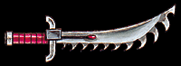
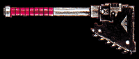

Imperial Forces |
Force Disposition Introduction |
Ork Forces |
|
+++ Date: 2588999/M41
+++ Ref: Arm/71103491/CTC
+++ By: Canoness Carmina, Order of the Argent Shroud, Fire Wastes
+++ To: General Kurov, Armageddon Command Guard, Infernus Hive
+++ Re: Deviancy within Adeptus Astartes Fleshtearers
+++ Thought: A woman's heart knows no Heresy.
General,
I must, however, insist on an immediate Inquisitorial investigation of the Fleshtearers Space Marine Chapter. We were unfortunate to be assigned to fight alongside them in the strike upon Rukglum's artillery positions and their conduct opens the gravest of questions in their suitability within the defence of Armageddon. It is my personal feeling that they are not fit for duty anywhere within our mighty Imperium.
|
| ||||||||||||||||||||||||||||||||||||||||||||||||||||||||
|
Chapter Master Seth denied me any tactical counsel whatsoever. After nearly a century in leading my Sisters to war, occasionally alongside Marine Chapters, this treatment came as no surprise. The fighting organisation and capabilities of any Sororitas Order is at least the equal to an Astartes Chapter and my Sisters are well versed in the covering of tactical errors by our alleged allies. This alone is of no concern to myself or the Order. As you will have been made aware, we struck Warlord Rukglum's army as it moved position from shelling the mining outpost Gaius Point, to occupy the settlement. Battered by three days' bombardment, the population of Gaius Point had dug underground and, under the careful ministrations of my Sisters Superior, were determined to form an ad hoc militia to defend their homes. The Fleshtearers launched their attack on the Ork column when it was approximately one Imperial Mile from Gaius Point and, hitting the Orks in the rear and flanks, they drove the disorganised enemy into our waiting guns. Caught between Sister and Marine, many Orks were slaughtered, with the survivors mounting their vehicles to escape with all haste.  We first noticed something was very wrong when three mobs of Orks, deserted by their cowardly leaders, formed up and assaulted our front line, choosing to engage the Gaius Point militia, rather than my Sisters' deadly accurate bolt guns. The Fleshtearers, apparently driven mad by some kind of battle frenzy, crashed into their rear ranks just as the first Orks reached the militia. It is my fear that no one in the Command Guard will believe what I must report occurred next but, as the Emperor is my witness, these things happened. The Fleshtearers fell upon the Orks in what I can only describe as an orgy of blood letting. Many Marines had removed their helmets and, eschewing the use of pistols and other ranged weapons, set about the Orks with chainsword and knife and tooth. I swear, I saw it with my own eyes, Marines were ripping out the throats of Orks with their bared teeth. The raw fury and love of carnage I saw in their faces as they literally tore the enemy apart still makes me shudder as I write this. The Orks were annihilated within seconds of the Marines' attack, but the small number of the enemy were simply not enough for the Fleshtearers who by now seemed to have been driven into a fever pitch of absolute blood lust. With no more Orks for them to butcher, they scrambled over the barricades on the perimeter of Gaius Point and smashed into the thin line of militia. Properly driven into a true battle frenzy now, the Fleshtearers performed acts of the most debauched nature in the name of violence. Men, women and youths, all fell beneath their blades. The old, the infirm, none were spared the Fleshtearers' crazed attack. Sister Superior Shania later reported that she had witnessed cannibalistic acts by the Marines. I did not see this, but I believe it. I ordered my Sisters to withdraw from the Fleshtearers with all haste, before they reached our positions. The Orks have been defeated once more in the Fire Wastes and the Imperium can claim another victory. But there are no survivors of Gaius Point. None at all. I must reiterate. It is clear that the Fleshtearers are unstable beyond redemption and an Inquisitorial investigation is the very least Chapter Master Seth and his Marines should be subject to. During my service to the Order, I have heard many strange rumours concerning the Successor Chapters of the Blood Angels, but it is evident that the Fleshtearers have devolved far beyond any point reached by a loyalist Chapter.  Either call in an Inquisitor, or bring the Imperial Navy to bombard these animals from space, but my Order will not fight alongside the Fleshtearers again, I swear it. By the Immortal Emperor and everything I hold to be Holy, my Sisters will not risk themselves by allying with savages, regardless of your own wishes. Canoness Carmina | |||||||||||||||||||||||||||||||||||||||||||||||||||||||||